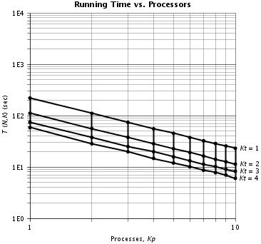
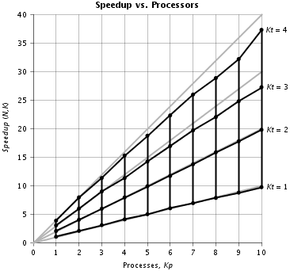

HybridSpeedup
HybridSpeedup
|
||||||||||
| PREV CLASS NEXT CLASS | FRAMES NO FRAMES | |||||||||
| SUMMARY: NESTED | FIELD | CONSTR | METHOD | DETAIL: FIELD | CONSTR | METHOD | |||||||||
java.lang.Object
public class HybridSpeedup
Class HybridSpeedup is a main program that analyzes running time measurements and reports speedup metrics for a hybrid parallel program.
Usage: java HybridSpeedup inputfile
The input file, a plain text file, is formatted as follows. Blank lines are ignored. A pound sign (#) and everything after it on a line is ignored.
The input file begins with running time data. Each line contains an n value, a Kp value, a Kt value, and one or more T values. The n value, an integer, is the size parameter; it is either the problem size itself or a quantity from which the problem size can be derived. The Kp value, an integer >= 0, is the number of parallel processes; Kp = 0 signifies the running times are for a sequential version of the program, Kp > 0 signifies the running times are for a parallel version of the program. The Kt value, an integer >= 0, is the number of parallel threads; Kt = 0 signifies the running times are for a sequential version of the program, Kt > 0 signifies the running times are for a parallel version of the program. Each T value, a long integer, is a running time measurement in milliseconds.
After the running time data come the problem size specifications. Each line begins with the literal character n followed by an n value, an N value, and a label text enclosed in quotation marks. The n value, an integer, is one of the size parameter values appearing in the running time data section. The N value, a floating point number, is the actual problem size corresponding to that size parameter. The label text is placed next to the curve for that size parameter on the plots. If no problem size specification line appears for a certain size parameter in the running time data, then the problem size is taken to be the same as the size parameter, and the label text is taken to be "N = n".
After the problem size specifications (if any) come the plot specifications. Each of the following plot specifications is optional. The plot specification keywords are the same as the methods of class Plot; see that class for further information.
The following plot specifications control the running time plot:
time frameTitle "theTitle" (default: no title)
time plotTitle "theTitle" (default: "Running Time vs.
Processors")
time margins theMargin
time leftMargin theMargin (default: 42 points)
time topMargin theMargin (default: 18 points)
time rightMargin theMargin (default: 18 points)
time bottomMargin theMargin (default: 36 points)
time xAxisStart theStart (default: automatic*)
time xAxisEnd theEnd (default: automatic*)
time xAxisLength theLength (default: 288 points)
time xAxisTitle "theTitle" (default: "Processes, Kp")
time yAxisStart theStart (default: automatic*)
time yAxisEnd theEnd (default: automatic*)
time yAxisTickFormat "theFormat" (default: "0E0")
time yAxisLength theLength (default: 288 points)
time yAxisTitle "theTitle" (default: "Running Time, T (sec)")
time yAxisTitleOffset theTitleOffset (default: 30 points)
*For the running time plot, which is a log-log plot, the specified X and
Y axis starting and ending values are the base-10 logarithms of the actual
values.
The following plot specifications control the speedup plot:
time frameTitle "theTitle" (default: no title)
speedup plotTitle "theTitle" (default: "Speedup vs.
Processors")
speedup margins theMargin
speedup leftMargin theMargin (default: 42 points)
speedup topMargin theMargin (default: 18 points)
speedup rightMargin theMargin (default: 18 points)
speedup bottomMargin theMargin (default: 36 points)
speedup xAxisStart theStart (default: 0)
speedup xAxisEnd theEnd (default: automatic)
speedup xAxisMajorDivisions theMajorDivisions (default: 10)
speedup xAxisMinorDivisions theMinorDivisions (default: 1)
speedup xAxisLength theLength (default: 288 points)
speedup xAxisTitle "theTitle" (default: "Processes, Kp")
speedup yAxisStart theStart (default: 0)
speedup yAxisEnd theEnd (default: automatic)
speedup yAxisMajorDivisions theMajorDivisions (default: 10)
speedup yAxisMinorDivisions theMinorDivisions (default: 1)
speedup yAxisTickFormat "theFormat" (default: "0")
speedup yAxisLength theLength (default: 288 points)
speedup yAxisTitle "theTitle" (default: "Speedup")
speedup yAxisTitleOffset theTitleOffset (default: 30 points)
The following plot specifications control the efficiency plot:
time frameTitle "theTitle" (default: no title)
eff plotTitle "theTitle" (default: "Efficiency vs.
Processors")
eff margins theMargin
eff leftMargin theMargin (default: 42 points)
eff topMargin theMargin (default: 18 points)
eff rightMargin theMargin (default: 18 points)
eff bottomMargin theMargin (default: 36 points)
eff xAxisStart theStart (default: 0)
eff xAxisEnd theEnd (default: automatic)
eff xAxisMajorDivisions theMajorDivisions (default: 10)
eff xAxisMinorDivisions theMinorDivisions (default: 1)
eff xAxisLength theLength (default: 288 points)
eff xAxisTitle "theTitle" (default: "Processes, Kp")
eff yAxisStart theStart (default: 0)
eff yAxisEnd theEnd (default: automatic)
eff yAxisMajorDivisions theMajorDivisions (default: 10)
eff yAxisMinorDivisions theMinorDivisions (default: 1)
eff yAxisTickFormat "theFormat" (default: "0.0")
eff yAxisLength theLength (default: 288 points)
eff yAxisTitle "theTitle" (default: "Efficiency")
eff yAxisTitleOffset theTitleOffset (default: 30 points)
The following plot specifications control the experimentally determined
sequential fraction (EDSF) plot:
time frameTitle "theTitle" (default: no title)
edsf plotTitle "theTitle" (default: "EDSF vs.
Processors")
edsf margins theMargin
edsf leftMargin theMargin (default: 42 points)
edsf topMargin theMargin (default: 18 points)
edsf rightMargin theMargin (default: 18 points)
edsf bottomMargin theMargin (default: 36 points)
edsf xAxisStart theStart (default: 0)
edsf xAxisEnd theEnd (default: automatic)
edsf xAxisMajorDivisions theMajorDivisions (default: 10)
edsf xAxisMinorDivisions theMinorDivisions (default: 1)
edsf xAxisLength theLength (default: 288 points)
edsf xAxisTitle "theTitle" (default: "Processes, Kp")
edsf yAxisStart theStart (default: 0)
edsf yAxisEnd theEnd (default: automatic)
edsf yAxisMajorDivisions theMajorDivisions (default: 10)
edsf yAxisMinorDivisions theMinorDivisions (default: 1)
edsf yAxisTickFormat "theFormat" (default: "0")
edsf yAxisLength theLength (default: 288 points)
edsf yAxisTitle "theTitle" (default: "Sequential Fraction, F")
edsf yAxisTitleOffset theTitleOffset (default: 30 points)
For each line in the running time data section, the program takes the smallest T value as the running time for the given n and K values. For each value of n, the program calculates the following data series: running time versus Kp and Kt for Kp and Kt >= 1; speedup versus Kp and Kt for Kp and Kt >= 1 (speedup relative to the sequential version if input data for Kp = 0 is present, otherwise speedup relative to the parallel version for Kp = Kt = 1); efficiency versus Kp and Kt for Kp and Kt >= 1 (efficiency = speedup/(Kp*Kt)); EDSF versus Kp and Kt for Kp or Kt >= 2 (EDSF relative to the parallel version for Kp = Kt = 1); and running time deviation versus Kp and Kt (deviation = (maximum T - minimum T) / (minimum T)).
The program prints the running time, speedup, efficiency, EDSF, and running time deviation series on the standard output.
The program displays plots of the running time, speedup, efficiency, and EDSF series, each in its own window. Each plot window has menu options for saving the plot to a PNG image file, saving the plot to a PostScript file, and zooming the display.
Here is an example of an input file:
hybtimes.txt
27 0 0 223352 226590 225559 225460 224333 227854 225836
27 1 1 229705 221275 229412 220199 220695 229741 229090
27 1 2 111249 111490 111091 113569 111738 113729 110768
27 1 3 76009 76823 80661 76172 75743 76768 74518
27 1 4 61777 62049 58180 58522 58422 58435 61869
27 2 1 114810 110901 112733 110364 112385 111219 115009
27 2 2 56217 56528 55906 57538 57095 57004 57919
27 2 3 40389 40603 38273 37536 40468 40730 38890
27 2 4 30410 30353 30810 30696 28219 30495 29067
27 3 1 74752 74293 73706 74143 75357 74704 74282
27 3 2 37764 40142 38299 38578 38400 38010 38126
27 3 3 27025 26351 24973 27455 26037 26481 26914
27 3 4 20120 19845 20637 19761 21096 19932 20572
27 4 1 55892 55696 55573 57322 57674 57156 55289
27 4 2 29755 30762 28718 28828 28255 28898 28975
27 4 3 19912 19793 20400 21538 19782 20286 20173
27 4 4 15080 15493 15487 14653 15245 15438 15091
27 5 1 45384 46273 45739 45427 45193 46216 45633
27 5 2 23366 23312 24347 23460 23165 22652 22974
27 5 3 15820 15957 16038 16048 16045 16322 15742
27 5 4 11929 12154 12341 12358 12174 12426 12612
27 6 1 37838 37322 38540 38585 37277 38182 37462
27 6 2 19250 19164 19847 20005 19136 19299 20340
27 6 3 13697 13654 13651 13716 13204 13646 13772
27 6 4 10027 10214 10462 10404 10351 10134 10229
27 7 1 32938 33099 33075 32421 33072 33079 33145
27 7 2 17071 16713 16286 17110 16725 16483 16473
27 7 3 11443 11459 11472 11524 11361 11829 11494
27 7 4 8930 8611 8955 8912 8955 8871 8885
27 8 1 28984 28967 28838 28620 28878 28861 28849
27 8 2 14402 14361 15064 15406 14123 14218 14578
27 8 3 10214 10300 10232 10216 10308 10801 10163
27 8 4 7807 7895 7751 7866 7890 7871 7788
27 9 1 25765 25637 25711 25757 25694 25589 25704
27 9 2 12586 12792 12794 13269 12963 13066 13206
27 9 3 9169 9131 9255 9024 10131 9199 9098
27 9 4 6977 7009 6995 6948 6987 7263 7035
27 10 1 23150 23185 23082 23200 23212 23036 23260
27 10 2 11588 11947 11570 11306 11694 11402 11747
27 10 3 8302 8237 8309 8247 8206 8615 8260
27 10 4 6260 6352 6241 5992 6316 6247 6226
n 27 134217728 "N = 128M"
time yAxisStart 3
time yAxisEnd 7
speedup yAxisEnd 40
speedup yAxisMajorDivisions 8
eff yAxisEnd 1.1
eff yAxisMajorDivisions 11
Here is the output the HybridSpeedup program printed for the above input
file: hybspeedup.txt
$ java HybridSpeedup hybtimes.txt
N Kp Kt T Spdup Effic EDSF Devi
128M seq seq 223352 2%
128M 1 1 220199 1.014 1.014 4%
128M 1 2 110768 2.016 1.008 0.006 3%
128M 1 3 74518 2.997 0.999 0.008 8%
128M 1 4 58180 3.839 0.960 0.019 7%
128M 2 1 110364 2.024 1.012 0.002 4%
128M 2 2 55906 3.995 0.999 0.005 4%
128M 2 3 37536 5.950 0.992 0.005 9%
128M 2 4 28219 7.915 0.989 0.004 9%
128M 3 1 73706 3.030 1.010 0.002 2%
128M 3 2 37764 5.914 0.986 0.006 6%
128M 3 3 24973 8.944 0.994 0.003 10%
128M 3 4 19761 11.303 0.942 0.007 7%
128M 4 1 55289 4.040 1.010 0.001 4%
128M 4 2 28255 7.905 0.988 0.004 9%
128M 4 3 19782 11.291 0.941 0.007 9%
128M 4 4 14653 15.243 0.953 0.004 6%
128M 5 1 45193 4.942 0.988 0.007 2%
128M 5 2 22652 9.860 0.986 0.003 7%
128M 5 3 15742 14.188 0.946 0.005 4%
128M 5 4 11929 18.723 0.936 0.004 6%
128M 6 1 37277 5.992 0.999 0.003 4%
128M 6 2 19136 11.672 0.973 0.004 6%
128M 6 3 13204 16.915 0.940 0.005 4%
128M 6 4 10027 22.275 0.928 0.004 4%
128M 7 1 32421 6.889 0.984 0.005 2%
128M 7 2 16286 13.714 0.980 0.003 5%
128M 7 3 11361 19.660 0.936 0.004 4%
128M 7 4 8611 25.938 0.926 0.004 4%
128M 8 1 28620 7.804 0.976 0.006 1%
128M 8 2 14123 15.815 0.988 0.002 9%
128M 8 3 10163 21.977 0.916 0.005 6%
128M 8 4 7751 28.816 0.900 0.004 2%
128M 9 1 25589 8.728 0.970 0.006 1%
128M 9 2 12586 17.746 0.986 0.002 5%
128M 9 3 9024 24.751 0.917 0.004 12%
128M 9 4 6948 32.146 0.893 0.004 5%
128M 10 1 23036 9.696 0.970 0.005 1%
128M 10 2 11306 19.755 0.988 0.001 6%
128M 10 3 8206 27.218 0.907 0.004 5%
128M 10 4 5992 37.275 0.932 0.002 6%
Here are the plots the HybridSpeedup program generated for the above input file:


The HybridSpeedup program's error handling is rudimentary. The first error in the input file terminates the program. The error may cause an exception stack trace to be printed.
| Method Summary | |
|---|---|
static void |
main(String[] args)
Main program. |
| Methods inherited from class java.lang.Object |
|---|
clone, equals, finalize, getClass, hashCode, notify, notifyAll, toString, wait, wait, wait |
| Method Detail |
|---|
public static void main(String[] args)
throws Exception
Exception
|
||||||||||
| PREV CLASS NEXT CLASS | FRAMES NO FRAMES | |||||||||
| SUMMARY: NESTED | FIELD | CONSTR | METHOD | DETAIL: FIELD | CONSTR | METHOD | |||||||||